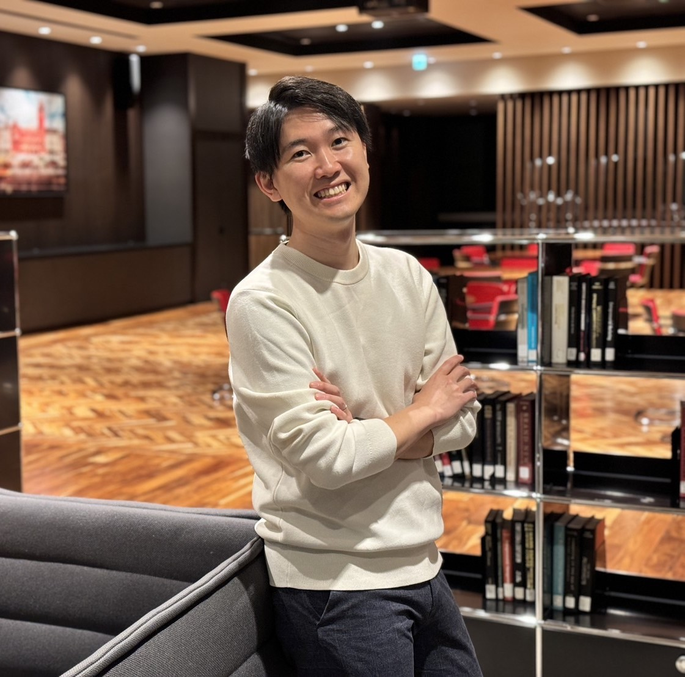

トヨタ自動車株式会社
先進カンパニー 先進モビリティシステム開発部 交通デジタルツイン開発Gr. 主任
危険交差点を中心にしたリアルタイム交通デジタルツインと事故予測の仕組みを構築し、VLM・バードビューWebアプリ・交通情報パイプラインの開発を担当しています。
Portfolio
交通デジタルツイン・V2X・遠隔運転・サテライト通信

1994年7月28日生まれ。同志社大学理工学部機械システム工学科卒業後、デンソー、本田技研工業、トヨタ自動車を経て、 InfoTech Labs（シリコンバレー）でITエンジニアとして勤務。現在はトヨタ自動車先進カンパニーにて交通デジタルツインや事故予測アプリの開発をリードしています。
Phone: 080-1550-7280
Email: taish.dengel@gmail.com
愛知県名古屋市
同志社大学 理工学部 機械システム工学科（2017年卒）
名古屋商科大学ビジネススクール MBA（Business Innovation Program、2024年卒）
先進カンパニー 先進モビリティシステム開発部 交通デジタルツイン開発Gr. 主任
危険交差点を中心にしたリアルタイム交通デジタルツインと事故予測の仕組みを構築し、VLM・バードビューWebアプリ・交通情報パイプラインの開発を担当しています。
Core Connected Technologies Group, 5G/Satellite Communication Researcher
遠隔自動運転サービスの企画・開発、サテライト通信の通信能力検証と新規アプリ企画、プライベート5G連携アプリ開発、北米新技術・パートナー探索を担当しました。
電動パワトレ制御機能開発部 コネクティッド新価値創造室 ソリューション・AI新価値企画Gr.
次世代BEV企画・開発、チームビルディングとツールチェーン企画、車載OS開発・コネクテッド連携安全機能開発、ビッグデータを使った新価値アプリ開発、車載HMI用Androidアプリ開発、中小企業の新規事業コンサル/ECサイト立ち上げ支援を担当しました。
先進安全技術開発部 V2X開発Gr. 機能開発リーダー
V2Xを使ったコネクティッド機能の内製開発、NCAP対応機能開発・国際プロトコル対応、機能HMI・要求仕様書作成、車両試作・試験対応、ドライビングシミュレータを用いた評価テストを担当しました。
パワトレインコンポーネント製造部 リーダー
新製品工程設計、画像処理による自動外観検査装置開発、F-IoTを用いた工程改善ツール開発、AGVを使った搬送システム開発、海外ラインの稼働率向上・新規立ち上げを担当しました。
同志社大学 理工学部 機械システム工学科（2017年卒）
名古屋商科大学ビジネススクール MBA（Business Innovation Program、2024年卒）
全社特許奨励賞 個人部門 2025
MBA Case Award 2023
Beta Gamma Sigma Member 2024
DENSO 社長賞 2019
応用情報技術者 2021
基本情報技術者 2021
QC検定2級 2019 / 3級 2018
普通自動車免許一種